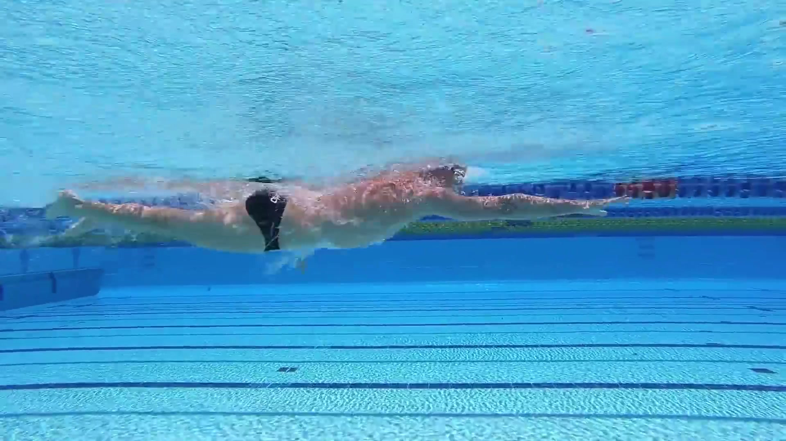

泳
节奏实验室Freestyle Frame Lab
本地真人教学原片 · 1080P / 30fps
Stroke × Kick Coordination
把手腿配合，
拆到关键帧。
拖动观察轴，看清真人入水、抓水、划水、推水与每一次下打的关系。主节拍始终是：一侧手臂入水前伸，对侧腿向下打。
连续配合 · 3 个完整周期
第 1 轮 · 第 1 拍 · 右腿重踢
左手入水前伸，同时右腿完成主下打。
手臂位置
左臂入水前伸
右臂推水结束
口令重腿负责换侧，轻腿负责续航与体位。
全部画面取自您下载的 1080P/30fps 原片；解析原则按 USMS 校验。
第 1 轮 · 帧 001 / 060
当前发力动作准备
六次腿片段 · 本地原片帧 000–179 · 左右按运动员本体
先标记同一只手的两次入水

真人关键帧 1 / 6 · 全身侧视
0.00 s
一周期六个节拍窗口
上方连续轨道负责左右与重轻时序；这里点击查看当前轮次的动作细节。
训练控制台
先慢速建立顺序，再逐步加速。键盘：空格播放，←/→ 逐帧。
显示发力箭头
阶段自动停顿
三种节奏，不是三种“快慢档”
数字表示一个完整双臂周期内的向下打腿次数。选型看距离、平衡能力、脚踝效率与比赛策略。
6-beat
连续推进 / 高稳定
每侧手臂周期配 3 次下打；主下打维持旋转，两个辅助拍补充推进与体位。
4-beat
不对称混合节奏
一侧 3 拍、另一侧 1 拍。常与呼吸侧和个人节奏相关，不必强求左右平均。
2-beat
旋转锚点 / 省能
每次单臂划水只配 1 次对侧主下打；对平衡与躯干连接要求最高。
高手策略怎么借鉴
借鉴“选择逻辑”，不机械复制外形。
01
长距离：把腿当节拍器二次腿常用于长距离以节省能量；末段需要提速时可切入六次腿。
02
四次腿：接受有功能的不对称USMS 教程列举孙杨会随呼吸节奏在二、四次腿之间变化，末段再提升到六次腿。
03
短距离：持续推进仍需动作质量六次腿提供更多推进并帮助抵消划臂造成的髋部下沉，但幅度过大仍会增加阻力。
依据与延伸阅读
原片用于观察真实连续动作；节拍解释按 USMS 教学资料校验，不冒充实验室运动捕捉。
Effortless Swimming · 2 / 4 / 6 Beat Kick本页在线视频来源：三种节奏的水下侧视连续示范
USMS · Kick Timing 101二、四、六次腿计数与对侧同步
USMS LaneMate · Freestyle Kick下打、髋部旋转、脚踝与常见错误
USMS LaneMate · Freestyle Pull入水、抓水、划水、出水与恢复
USMS · Synchronizing Kick and Stroke0→2→4→6 次腿渐进练习
安全提示：肩部或腰髋疼痛时不要强行模仿高肘或大幅滚转。动画用于理解节奏，个人动作应结合水下录像与合格教练反馈。